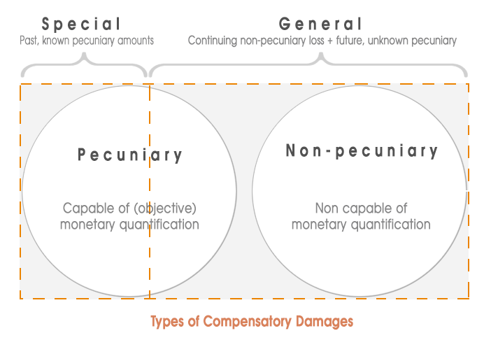
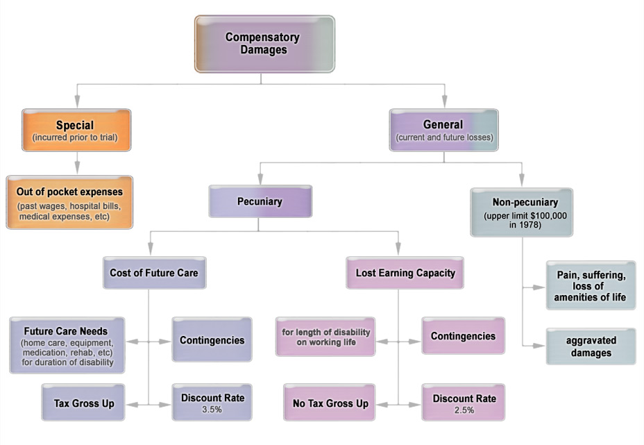

Remoteness of Damage and Remedies
Overview
In this module, we examine two Negligence concepts related to the single purpose of compensating the plaintiff: Remoteness of Damage and Remedies (i.e. awards/compensation for Damages). The rules relating to remedies and remoteness determine the financial outcome of the claim.
Aggravated and punitive damages are sometimes awarded in negligence cases, whether involving personal injury or property loss—though they are especially rare in negligence claims, and are more common (though still exceptional) in claims for intentional torts. Regardless of the nature of the claim, the plaintiff needs to prove certain elements for each.
The remoteness issue concerns the limits to be imposed on the extent of a defendant’s liability. There has to be a balance between the defendant’s careless fault and the extent of damage that results. The issue at this stage of the negligence action is to determine whether the plaintiff’s injuries are considered “too remote” to be recoverable. Or, put another way, was the defendant’s negligent conduct the proximate cause of the plaintiff’s loss?
Required Readings
- Philip H Osborne, The Law of Torts, 6th ed. (Toronto: Irwin Law, 2020), pp 68-69; 99-112; 123-141; 313-314.
- Overseas Tankship (U.K.) Ltd . v. Morts Dock and Engineering Co. Ltd., The Wagon Mound (No. 1) [1961] A.C. 388 (P.C.) [Note 206]
- Hughes v Lord Advocate [1963], A.C. 837 (H.L.) [Note 207]
- Overseas Tankship (U.K.) Ltd. v. Miller Steamship Co. Pty. Ltd., The Wagon Mound (No. 2), [1967] 1 A.C. 617 (P.C.) [Note 209]
- Mustapha v. Culligan of Canada Ltd., 2008 SCC 27
- Smith v. Leech Brain & Co. Ltd. [1962], 2 Q.B. 405 (C.A.) [Note 218]
- Andrews v. Grand & Toy Alberta Ltd., 1978 CanLII 1 (SCC)
- Thornton v. School Dist. No. 57 (Prince George) et al., 1978 CanLII 12 (SCC)
- Arnold v. Teno, 1978 CanLII 2 (SCC)
- Keizer v. Hanna and Buch, 1978 CanLII 28 (SCC)
Part 1
Topic 1: Remoteness of Damages
The tests for remoteness are legal tests: they are a sort of safety valve for courts to address their concerns about excessive tort liability (recalling Lord Buckmaster’s words in Donoghue, and the Supreme Court of Canada’s “spectre of indeterminate liability.”) As legal tests, they are not for a jury to consider, and an appeal court can overturn a trial judge’s decision on a question of remoteness.
The original test was directness. The new test applies foreseeability.
The old directness test (no longer the law in Canada)
The case of Re Polemis & Furness Withy & Co., [1921] 3 K.B. 560 (C.A.) (at p 99, note 213) established “directness” as the test for remoteness.
In order to recover, a plaintiff had to show that the loss was a direct consequence of the defendant’s negligent act. If the plaintiff’s loss was a result of a logically connected sequence of events that flowed from the defendant’s negligent act (or omission), with no intervening causes, then the damages were not too remote.
This test tended to favour plaintiffs, but not always. Sometimes foreseeable harm can occur in indirect ways, failing the “directness” test, as the court notes in Overseas Tankship (U.K.) Ltd. v. Morts Dock and Engineering Co. Ltd., The Wagon Mound (No. 1), [1961] A.C. 388 (P.C.). (at p 100, note 214 – “Wagon Mound 1”). In other situations, test could be difficult to apply, due to difficulties in identifying the exact chain of events. A large part of the problem was that the test itself was never clearly defined.
Topic 2: The Reasonable Foreseeability Rule
The foreseeability test
A series of decisions of England’s top court, decided in 1961, 1963, and 1966, replaced it with a test of foreseeability.
The first case is Wagon Mound 1, noted above. This Australian case is the one that formally overturned Polemis. It was a 1961 decision of the Judicial Committee of the Privy Council (“JCPC”), at the time the top appeal court for Australia. This decision changed the test from directness to foreseeability.
The question now was:
whether the plaintiff’s loss was a foreseeable consequence of the defendant’s negligence.
In Wagon Mound 1, ... the Court held that foreseeability is a better test, and on the facts found that it was not foreseeable that the oil would catch fire and severely damage the wharf. The defendants (although negligent) were not liable.
The Wagon Mound 1 has, however, generally been interpreted as requiring that the damage be foreseeable as to a probability, drawing on this phrase:
a [person] must be considered to be responsible for the probable consequences of [that person’s] act.
In other words, if it was reasonably foreseeable that the damage would probably result (reasonable probability), then the damage is not too remote and compensable.
Wagon Mound 1’s version of the foreseeability test seems to favour defendants, it is harder for a plaintiff to establish that a loss is foreseeable as to a probability, than to prove it is a direct consequence of the negligence.
However, other cases suggest a lower threshold and as we shall see Canadian cases since the 1960s may not require a plaintiff to prove that the consequences were probable.
Modifications to the foreseeability test: “retreats” from its stricter rule
The foreseeability test has been modified over the years. The modifications to the Wagon Mound 1 test, sometimes called “retreats” from its apparent difficulty for plaintiffs, help the plaintiff establish liability. In other words they expand liability.
Retreat 1: Type of damage - Hughes
The first qualification to the test came only two years later, in Hughes v Lord Advocate [1963], A.C. 837 (H.L.) (at p 101, note 215).
The House of Lords held that the exact cause of an injury need not be foreseeable, that is the exact sequence of events leading to it, as long as the type (or kind) of injury is foreseeable. It also held, importantly, that the extent of the injury is not important either, as long as it is a foreseeable kind.
Although the judges on the House of Lords are the same as those who sat on the JCPC, its decisions are formally binding only in the U.K. The Hughes case has, however, been adopted in Canada, see School Division of Assiniboine South, No. 3 v. Greater Winnipeg Gas Company Limited, 1971 CanLII 959 (MB CA), p 102 of text (note 219) , which was affirmed by the Supreme Court of Canada in 1973 when an appeal was dismissed. Considering this test you may find that it is ultimately quite subjective.
Retreat 2: Possibility of damage? – Wagon Mound 2
The same fire that was the basis of The Wagon Mound 1 was also the basis of a second action. In Overseas Tankship (U.K.) Ltd . v. Miller Steamship Co. Pty. Ltd., The Wagon Mound (No. 2), [1967] 1 A.C. 617 (P.C.) [“Wagon Mound 2”], a 1966 decision of the JCPC (reported in 1967), Court found that the loss by fire was not too remote: i.e., in this case it was foreseeable.
In this trial, there was evidence from the engineers who were doing the welding. They admitted that they foresaw some risk of furnace oil igniting, even when spread on open water. It seemed unlikely to them, but possible.
While some of the reasoning in this case is not all that clear, later cases interpreted it as changing the test from foreseeability as to a probability to foreseeability as to a possibility: i.e., a plaintiff need only show that it was reasonably foreseeable that the injury could possibly result.
Canadian courts however do not set the threshold as low as a mere “possibility.” In Mustapha v. Culligan of Canada Ltd., 2008 SCC 27, at para 13, [see p 102, note 220] the Supreme Court of Canada reinterpreted Wagon Mound 2 and confirmed that the risk needs to be more than a mere possibility: likely closer to a probability. However, that case, and most other Canadian cases, follow the Hughes case in focusing on the kind of harm, rather than the specific series of events leading to the harm.
Topic 3: Special Remoteness Issues
Thin skull rule, as known as the “eggshell skull” rule, means that the tortfeasor takes the victim the tortfeasor gets, no matter how vulnerable.
However, under the thin skull rule, for the defendant to be liable, there must be proximate cause for the initial injury. It is only the consequential injury that need not be proximate.
The wrinkle that the longstanding thin skull rule adds to the Hughes rule is that, under thin skull, the consequential injury does not need to be the same type of injury as the initial injury, and the type of consequential injury need not be foreseeable.
The thin skull rule has been around for a long time. The question that came up after Wagon Mound 1 was whether that case had made the rule outdated. Smith v Leech Brain & Co., [1962] 2 Q.B. 405 (C.A.), a 1961 English decision (at p 105, note 226) answered this question: No.
A note on Mustapha and psychiatric harm
The courts have, however, taken a seemingly opposite approach when it comes to “mere” psychiatric damage, or nervous shock, in the absence of physical damage.
Mustapha is a leading case on this type of injury. In Mustapha, the Supreme Court confirmed the remoteness test of reasonable foreseeability enunciated in Wagon Mound 1 and Hughes, but added that in cases of mental injury the test must be considered in light of a person with “ordinary fortitude”.
In addition, the Court stated that, to be compensable, the injury must amount to a “recognizable psychiatric illness”.
Intervening Acts
“Intervening acts” (or intervening causes) refer to situations in which a defendant is negligent and subsequently a second cause intervenes resulting in a different loss, or aggravating the loss that the defendant’s negligence causes.
The issue is whether the intervening act breaks the chain of causation stemming from the defendant’s negligence, thus relieving the defendant of liability for the loss (i.e., the loss would be too “remote”), or whether the chain of causation is not broken, leaving the defendant responsible for the consequences of the intervening act as well. The “legally operative intervening act” (see text p 106) is sometimes called a novus actus interveniens.
The foreseeability test is still used in some cases. However, the modern rule is usually the “within the scope of the risk” test, which can be broader than mere foreseeability:
The second cause and the resultant damage must be within the scope of the risk of the first negligent act before the defendant will be liable. In other words, both the second cause and injury must fall within the chain of causation from the first injury.
When, however, an intervening act is sufficient to “break the chain of causation” (i.e., it is not within the scope of the risk), that act is a novus actus interveniens: a new, intervening act. In these circumstances, the original tortfeasor will not be liable for the resulting loss. It is only in rare cases that novus actus interveniens will be applied to completely exonerate the original tortfeasor.
An example of a case in which an intervening negligent act did break the chain of causation was in Bradford et al. v. Kanellos et al., 1973 CanLII 1285 (SCC), discussed in the text (at pp 107-108, note 228).
Intervening medical error
There are special considerations when the tortfeasor is a physician.
The text (at 108, note 231) refers to Price v. Milawski et al., 1977 CanLII 1400 (ON CA), where a second doctor’s negligence compounded the effects of the first doctor’s negligence. The Court applied the foreseeability test in this case, stating that where the subsequent negligence and consequent damage were reasonably foreseeable as a possible result of the original negligence, then the first doctor would be liable for all damage including from the time of the second doctor’s intervention forward. The second doctor was also liable from the point of his intervention forward. As such, both doctors were jointly and severally liable for this subsequent damage.
Topic 4: Introduction to Remedies
Note that the words “damages” and “remedies” are sometimes used interchangeably although it’s more accurate to say that a remedy is an “award of damages.”
In this module we look at the purpose of remedies, and see the different types of remedies available to a plaintiff. We will focus on personal injury cases, and assume that all the other elements are proved, and the defendant is liable for the plaintiff’s losses.
The text (at pp 124-140) in particular does a thorough job covering remedies for personal injury and fatal accidents (see also Note 272 for optional supplementary readings).
General Principles and Types of Remedies
One way to classify damages (i.e. remedies, although in this context damages is term more commonly used) is according to the function they serve. According to this classification, tort damages can belong to one of several categories:
- Nominal damages: not available in negligence actions. Nominal damages are awarded for claims that are “actionable without proof of loss” (e.g., trespass, an intentional tort we cover in a subsequent Module). Although no substantial damage has been sustained, a nominal award may be made as vindication for the plaintiff’s rights being violated.
- Compensatory damages: almost always awarded in successful negligence actions. The purpose of compensatory damages is to place the plaintiff in the position the plaintiff would have been if the tort had not occurred. We will focus on this type of damage in this Module.
- Punitive damages: rarely awarded in negligence claims. Punitive damages are over and above compensatory damages. They punish the defendant for the wrongful behaviour. The plaintiff must show conduct on the part of the defendant that is malicious, outrageous, vicious, etc.
- A fourth category of damages is also available, called aggravated damages. This category of remedy is actually a subset of compensatory damages, but is only available in special cases.
Topic 5: Personal Injury
In 1978 the Supreme Court of Canada swept that old approach aside with the “damages trilogy” (see p 124, note 273) three cases involving catastrophic injuries that it decided back to back: Andrews v. Grand & Toy Alberta Ltd., 1978 CanLII 1 (SCC), Thornton v. School Dist. No. 57 (Prince George) et al., 1978 CanLII 12 (SCC), and Arnold v. Teno, 1978 CanLII 2 (SCC).
The Supreme Court of Canada established that the proper approach to damages in major-injury cases is to classify personal injury remedies under various heads of damage.
Types of compensatory damages: pecuniary & non-pecuniary; special and general
The first step is to divide the claim between general and special damages:
- General damages are for harm that the plaintiff is suffering now and will continue to incur in the future, and which need to be estimated, since their extent and exact amount cannot be determined precisely.
- Special damages are for expenses that the plaintiff has already incurred before the date of the trial, due to the harm caused by the defendant’s negligence. These are known, objectively measured expenses. Think of them as “specific,” and “exact.”
The main difference between these two “heads of damage” is that special damages can be precisely calculated, e.g., out-of-pocket expenses, or provable amounts of income lost before trial. Special damages are generally straightforward, it is often just a matter of providing receipts for the expenses.
Courts then divide general damages into two further heads:
- Pecuniary loss: losses that are monetary in nature, such as the cost of care in the future, and lost earning capacity. These amounts can be calculated and are largely based on expert evidence. The bulk of Andrews is taken up by these.
- Non-pecuniary loss: damages that are more subjective, and do not relate to specific monetary losses, such as pain and suffering, loss of amenities of life, etc. These amounts must be “assessed,” i.e., a dollar figure assigned to them, based on precedents with similar injuries, and, since 1978, subject to a cap.

Limitation Periods
A limitation period is the amount of time that a party has to bring an action against another, before their action will be statute-barred.
The B.C. government recently rewrote its limitations statute, enacting the Limitation Act, SBC 2012, c 13, which came into force in 2013. It has replaced a range of time periods for different types of claims (tort, contract, property, etc.) with one universal, 2-year limitation period, subject to some exceptions (e.g., sexual assault: no limitation period).
The general rule is in section 6:
a court proceeding in respect of a claim must not be commenced more than 2 years after the day on which the claim is discovered.
Section 8 defines what amounts to “discovery” of the claim: the date on which the potential plaintiff knew or reasonably ought to have known that an “injury, loss or damage had occurred” and that the defendant caused it.
Note that if the potential plaintiff is a minor, or is an adult incapable of managing the persons’ own affairs, the limitation period does not begin until the minor reaches the age of 19, or until the adult becomes capable of managing that person’s affairs (sections 18, 19).
Burden of proof: onus and standard
The plaintiff has the onus of proof on the question of damages. The plaintiff must show actual loss, whether past, present or future. To break these down:
- Pre-trial losses: These are losses that the plaintiff has sustained after the accident but prior to the trial. The plaintiff must prove these losses on a balance of probabilities, and if successful, will generally be awarded 100% of the loss.
- Future losses: These are losses that the plaintiff will continue to incur after the trial, which include the cost of future care and lost earning capacity. There are two lines of thought as to the required standard of proof:
- on balance of probabilities: if proven, there is 100% compensation; if not proven, then nothing.
- reasonable or substantial possibility: the plaintiff must prove whatever chance of occurrence of that future loss the plaintiff can, above what the court considers a “reasonable minimum.” A successful plaintiff will receive that percentage in compensation; if below a “reasonable minimum,” then nothing.
Module 5 - Topic 5 - Practice Question
- Which of the following are usually straightforward and easy to calculate?
- special damages
- general damages
- pecuniary loss
- non-pecuniary loss
Part 2
Topic 6: Heads of Damage
The following diagram provides a summary of the various heads of compensatory damages in personal injury claims:

Pecuniary loss category (a): Future care costs
Future care costs is the cost to provide appropriate care for the plaintiff given the plaintiff’s disabilities. Remember that the primary objective of compensatory damages is to place the victim in the position the victim would have been if the accident had not occurred.
For Andrews, items that fell under this head of damage included:
- cost of home care, including basic necessaries and personal assistance
- any special equipment he would require
- special medications
These costs are to be paid over a plaintiff’s anticipated length of disability.
The Supreme Court deducted an amount of 20% for contingencies that might affect the duration of the expense, such as having to spend some time in hospital.
Pecuniary loss category (b): Lost earning capacity
If a plaintiff cannot return to work due to the disability, the courts can award an amount for lost earning capacity. This lost potential can be based on past earnings (e.g. where a plaintiff is partially disabled and able to return to the same job in the future). The award can also be based on the “capital asset” approach (more common where a plaintiff is permanently disabled and not able to return to the same or possibly any job).
Of course, where possible the plaintiff must mitigate loss by looking for other types of work.
In Andrews, the Supreme Court took the average wage for someone in the plaintiff’s position (halfway between the starting wage and the maximum) and used that as the basis for the calculation of his projected level of earnings. Expert evidence is usually required to make this calculation. Factors affecting the amount of future lost income include the plaintiff’s projected length of working life (projected retirement), and contingencies (deduction for possible unemployment, illness, accident, and business depression).
Adjustment Factors for Pecuniary Awards
Contingencies are an adjustment factor that courts use to determine the appropriate amount of awards for future care and future lost income.
There are two other adjustments that courts make, which are more general, and are not specific to the facts of each case. These are the “discount rate” and “tax gross-up” (discussed in text at pp 127 and 128, and referred to in Andrews as “allowance for tax”).
Discount rate, a.k.a. Capitalization
When awarding a lump sum, ...the court has to predict this rate of return. At the same time, courts must take inflation into account, because of the reduced purchasing power of this money in the future. The discount rate will ensure that there will be enough money to cover the payments in the future, while also ensuring that the plaintiff will not be overcompensated.
In B.C., legislation has set the discount rate, so courts don’t need to calculate it. The Law and Equity Regulation, BC Reg 352/81, s 1: sets these rates:
- 3.5%, for costs of future care
- 2.5%, for lost earning capacity
Courts must deduct these percentages from the awards under these heads of damage. The lower amount for lost earning capacity reflects the fact that over time most people expect to receive salary increases which out-pace inflation.
Tax Gross-up
A second consideration when determining the amount of the lump sum is the tax impact. Tax is not paid on the lump sum award itself, but it is paid on interest and other forms of return on investment of that lump sum award.
For future care awards, the court takes the tax effect into account. It will apply a tax gross up on the future care portion of lump sum awards, but not on structured judgements.
A structured judgement is a court-ordered periodic payment of the award over time, as opposed to a single lump-sum payment at the time of judgement. Tax is not paid on the periodic payments (see page 125).
For awards for loss of future earning capacity, generally the courts do not add gross up. This is because the award is supposed to equal the plaintiff’s lost “gross” income, on which the plaintiff would have had to pay tax anyway.
However, in motor vehicle cases in B.C., s 98 of the Insurance (Vehicle) Act, RSBC 1996, c 231 now requires pre-trial loss of income claims to be based on net income (i.e., income after taxes). This makes sense for periodic judgements, but it also applies where the court decides or is required to award a lump sum. Section 99(3) of the Act permits the court to include an amount for tax gross-up on the lost income award.
Note: when structured judgements are awarded, the discount rate and grossing-up practice are not relevant. They are only for lump-sum payments.
Non-pecuniary loss
What should a plaintiff receive for pain and suffering, for the loss of quality of life? The Supreme Court of Canada has said that damages in this category are for solace: in other words, to provide the plaintiff with “physical arrangements which can make ... life more endurable”.
In Andrews, the Supreme Court held that $100,000 is the maximum allowable under this head of damage. That amount, however, is in 1978 dollars. The inflation-adjusted amount is approximately $350,000 dollars today.
To convert non-pecuniary amounts into today's dollar, you can use the Bank of Canada inflation calculator.
The maximum limit to non-pecuniary damages only applies to those damages that stem from physical injury.
Non-pecuniary loss for non-catastrophic injuries
For non-catastrophic injuries, the amount is determined on a de facto tariff based on precedent cases. In other words, the non-pecuniary remedy will depend on what was awarded in other cases where similar injuries were sustained.
Topic 7: Factors Affecting Remedies and Assessment
Mitigation
Even though the plaintiff may have suffered loss, there is still an obligation on the plaintiff to keep these losses to a reasonable minimum.
Mitigation is a defence to a negligence claim, so the defendant has the burden of proving that the plaintiff failed to mitigate.
Role of judges (and juries)
The assessment of damages is a question of fact to be decided by the trier of fact, assuming that the judge has applied the correct legal principles to the heads of damage.
The recourse to a jury trial remains a right in civil law but due to the unpredictability of a jury, civil jury trials are becoming rarer in Canada. The only possible exception is in motor vehicle accident cases where they are sometimes seen more frequently.
The rules for jury trials are set out in the Supreme Court Civil Rules, BC Reg 168/2009, and the Jury Act, RSA 2000, c J-3.
Lump-sum payments vs. structured settlements
As a general rule, judges only have the power to award lump sums. Plaintiffs usually prefer lump-sum payments.
Since 1998 in B.C., however, judges are required, subject to a few exceptions, to impose structured judgements in motor vehicle accident cases involving pecuniary loss (both future care and lost income awards) greater than $100,000 if it is in the plaintiff’s best interests. This is set out in section 99 of the Insurance (Vehicle) Act, RSBC 1996, c 231.
A structured judgement allows for periodic payments, as opposed to a lump sum, which can be adjusted as circumstances change. Do not confuse structured judgements with structured settlements, which are negotiated out of court and have been around for many years.
Collateral Benefits
An issue can arise when a plaintiff is injured and receives some financial help from other collateral sources as a result of the injury (e.g., private insurance, disability benefits, welfare or unemployment benefits, pension benefits, etc.). The plaintiff then sues the defendant.
What is the effect of these collateral benefits on the defendant’s liability?
In general, a defendant is not entitled to have the judgement reduced in the case of private insurance benefits, charitable and other gifts, pension benefits, welfare, or E.I. benefits. Other benefits that are in the nature of insurance benefits, in the sense that the plaintiff has paid for them in some way, are included in this list.
Each specific situation is subject, of course, to statutory rules to the contrary. For instance, Part 7 benefits received prior to trial under the Insurance (Vehicle) Regulation, BC Reg 447/83, for injuries arising out of a motor vehicle accident, are required by the Act to be deducted from the defendant’s judgement.
In Cunningham v. Wheeler; Cooper v. Miller; Shanks v. McNee, 1994 CanLII 120 (SCC) (see text p 132, note 288) the plaintiff sued the defendant for injuries suffered when he was hit by the defendant’s car. The Supreme Court of Canada had to consider whether disability benefits received by the plaintiff from his employer when he was off work had to be deducted from the claim, which included an amount for lost wages. The question was whether these benefits were in the nature of insurance benefits.
In these cases, on one hand there is a concern about over-compensation (since the plaintiff is being paid twice if no deduction is made). On the other hand, there is the view that the defendant should not benefit from extra payments in the form of insurance that the plaintiff has, after all, been paying premiums for.
The Supreme Court has given more weight to the latter concern in recognizing the right of the plaintiff to keep these types of benefits.
The problem in Cunningham was that the plaintiff employee had not “directly” paid for the benefits. There were no premium deductions from his pay cheque, for instance. However, the court held that direct payments were not the only way to prove contribution. Indirect payment through trade-offs in the collective bargaining process was sufficient. The plaintiff was able to establish such an indirect contribution, and the Supreme Court refused to make a deduction from the damages the defendant had to pay.
Doctrine of subrogation
The doctrine of subrogation states that where an employer or insurance company is legally obligated to make an indemnity payment to the victim of some injury (i.e, a payment of compensation to a customer or employee), they have the right to “step into the shoes” of the victim and pursue the claim against the tortfeasor on the victim’s behalf, or require repayment if the victim/plaintiff pursues the claim and recovers (see p 124).
The right to repayment only extends to the actual amount of the payment, and not any extra received by the plaintiff. The doctrine of subrogation is an equitable rule, but it can also be based, in certain specific cases, on legislation (e.g., dealing with workers’ compensation or provincial health insurance) or contract.
In some cases, even where there is a right of subrogation, it might not be exercised. It is either a goodwill gesture, or just too much work to bother with.
Calculating damages
The text at p 133-134 gives the example of Danicek v. Alexander Holburn Beaudin & Lang, 2010 BCSC 1111, as an example of personal injuries damages assessment. The case is summarized in the text and it is not part of our required reading for this Module.
Topic 8: Punitive and Aggravated Damages
Aggravated and punitive damages are sometimes awarded in negligence cases, whether involving personal injury or property loss, though they are especially rare in negligence claims, and are more common (though still exceptional) in claims for intentional torts.
Punitive damages
Punitive damages ... are damages to punish the tortfeasor for conduct that is “malicious, high-handed or oppressive,” which shocks the court’s sense of decency, and no actual proof of loss is required. Punitive damages, also known as exemplary damages, can be awarded in negligence cases where the defendant has been grossly negligent, or in cases where there is an independent actionable wrong (such as breach of trust or breach of fiduciary duty).
The principles applicable to awarding punitive damages are outlined in Whiten v. Pilot Insurance Co., 2002 SCC 18.
Aggravated damages
Aggravated damages, on the other hand, are damages that are awarded to the plaintiff because the defendant’s conduct was a shock to the plaintiff and caused injury to feelings, dignity, mental anguish, stress or humiliation. The purpose of these damages is to compensate the plaintiff, and not to punish the wrongdoer.
Unlike punitive damages, the plaintiff must prove actual injury before a court will award aggravated damages. In negligence cases, aggravated damages may be awarded on top of non-pecuniary damages, and it also appears that it can be beyond the upper limit set in Andrews. They are only awarded in exceptional cases.
Typically both aggravated and punitive damage awards in Canada have been in the somewhat low to moderate range ($10,000 to $75,000). However, in the last few decades Canadian courts began to make large awards. A prime example of this is Hill v. Church of Scientology of Toronto, 1995 CanLII 59 (SCC), a leading defamation case, which we will cover in a later Module under Defamation.
The question of whether punitive damages awards were getting too high came to a head in the contract law case of Whiten, mentioned above. The Supreme Court laying out the key principles for punitive awards in all civil claims. Punitive damages are only be awarded in exceptional cases to provide for the aim of punishment, deterrence and denunciation.
Topic 9: Fatal Accidents: "Wrongful Death" Claims
At common law, if a person died, so did any right to claim damages against the wrongdoer. In the mid-1800’s, the Fatal Accidents Act 1846 (9 & 10 Vict. c.93), commonly known as Lord Campbell’s Act, was enacted in England, which allowed some dependents to sue the wrongdoer.
The law has evolved such that now, claims for damages by the deceased’s family against the tortfeasor are permitted pursuant to legislation. In British Columbia, the relevant legislation is the Family Compensation Act, RSBC 1996, c 126 (see p 136, note 292 for similar legislation in other Canadian provinces). Claims brought under this Act are known as fatal accident claims or wrongful death actions. Section 3 of the Act entitles an action to be brought by the deceased’s personal representative for the benefit of the deceased’s parents, spouse or children. On the other side of the coin, if the tortfeasor has also died, s 5 of the Act allows actions to be maintained against the tortfeasor’s estate.
The Act is short and you can look at the relevant provisions here.
Assessing Damages in Fatal Accident Cases
In wrongful death claims, compensation is to put the dependents back to their pre-loss position, had their loved one not died. Legislation dealing with compensation and wrongful death is not uniform. Compensation in British Columbia is available to a smaller group of claimants than in Ontario: the parents, spouse or children. And since the award is for what they have lost as a result of the deceased’s death, items such as cost of future care and more general non-pecuniary damages are not applicable heads of damage. However, other general (pecuniary) loss and special damages are appropriate. Special damages are recoverable for expenses spent on caring for the deceased before his death, and for funeral expenses. Section 3(9) of the Act specifically provides for this.
An award may also be made for loss of “guidance, care and companionship.” Although not technically considered “non-pecuniary damages,” this head of damage is much more subjective (see p 138). This is different than non-pecuniary loss for pain and suffering for injuries sustained.
In addition, loss of future earnings is a compensable loss. Here it is not the lost earning capacity that is taken into account, but the actual loss of income that the deceased would have generated.
Keizer v. Hanna and Buch, 1978 CanLII 28 (SCC), is the leading case that discusses assessing damages in a fatal accident case. It is not referenced in our text but I’ve included it as a required case to read for this Module.
The Court allowed damages for the deceased’s loss of future earnings. The calculation was based on projected average earnings of the deceased for the duration of his working life expectancy. Deductions included income tax (he would have had to pay tax on that income if he were still alive), personal use, and personal support. What was left was disposable income for the dependents.
From that amount, the Court deducted a percentage for contingencies. In addition to contingencies, tax gross-up, and a discount rate are also applied. Unlike in personal injury claims where the future loss of earnings is not subject to tax gross-up, in fatal accident claims, gross-up is added because income tax is deducted from the gross income.
Other kinds of damages may also be recoverable, including the plaintiff’s loss of inheritance (which must be offset by any acceleration in inheritance from the award), or loss of household services.
The diagrams below illustrate the claims that can be made in wrongful death cases in British Columbia:


Note on Property Damage
The text summarizes the general principles related to damage to chattels and property. The key principle to remember is that remedies for damage to chattels and property are designed to put the plaintiff back in the pre-incident position.
Discussion Activity
In Andrews, the parties introduced expert evidence to arrive at this rate of return, which was calculated by subtracting the long-term rate of inflation from the long-term rate of investment return. The court held the rate to be 7%.
- Do you think that this figure is an accurate, current reflection of the difference between safe rates of return on investments and inflation?
- Is the 7% figure still valid in the era of low interest rates that began 14 years ago?
- Also, give your thoughts in general on Andrews and, in particular, the parts of the decision that you feel hold up better over time vs. other parts that may need revisiting.
Andrews v. Grand & Toy Alberta Ltd., 1978 CanLII 1 (SCC)
- Pecuniary loss
- (a) Future care
- (i) Standard of care: In assessing damages in claims arising out of personal injuries, the ordinary common law principles apply. The basic principle was stated "that the damages due either for breach of contract or for tort are damages which, so far as money can compensate, will give the injured party reparation for the wrongful act..." The principle that compensation should be full for pecuniary loss is well established. ...there is no duty to mitigate, in the sense of being forced to accept less than real loss. There is a duty to be reasonable.
- (ii) Life expectancy: it would be more useful to use statistics on the expectation of life of quadriplegics. A statistical average is helpful only if the appropriate group is used. At trial, Dr. Weir and Dr. Gingras testified that possibly five years less than normal would be a reasonable expectation of life for a quadriplegic.
- (iii) Contingencies of life: The "contingencies and hazards of life" in the context of future care are distinct. They relate essentially to duration of expense and are different from those which might affect future earnings, such as unemployment, accident, illness.
- (iv) Duplication with compensation for loss of future earnings: It is clear that a plaintiff cannot recover for the expense of providing for basic necessities as part of the cost of future care while still recovering fully for prospective loss of earnings. Without the accident, expenses for such items as food, clothing and accommodation would have been paid for out of earnings. They are not an additional type of expense occasioned by the accident. In my opinion, the projected cost of necessities should, therefore, be included in calculating the cost of future care, and a percentage attributable to the necessities of a person in a normal state should be reduced from the award for future earnings.
- (v) Cost of special equipment: In addition to his anticipated monthly expenses, Andrews requires an initial capital amount for special equipment. Both Courts below held that $14,200 was an appropriate figure for the cost of this equipment. In my opinion, this assessment is correct in principle, and I would therefore accept it.
- (b) Prospective loss of earnings
- (i) Level of earnings: The Appellate Division raised this to $1,200 per month, a figure between his present salary and the maximum for his type of work of $1,750 per month. Without doubt the value of Andrews' earning capacity over his working life is higher than his earnings at the time of the accident.
- (ii) Length of working life: The controversial question immediately arises whether the capitalization of future earning capacity should be based on the expected working life span prior to the accident, or the shortened life expectancy. ... it must be the loss of that capacity which existed prior to the accident. This is the figure which best fulfils the principle of compensating the plaintiff for what he has lost.
- (iii) Contingencies: It is a general practice to take account of contingencies which might have affected future earnings, such as unemployment, illness, accidents and business depression.
- (iv) Duplication of the Cost of Future Basic Maintenance: As discussed, since basic needs such as food, shelter, and clothing have been included in the cost of future care, a deduction must be made from the award for prospective earnings to avoid duplication.
- (c) Considerations relevant to both heads of pecuniary loss
- (i) Capitalization rate: allowance for inflation and the rate of return on investments. In my opinion, it would be better to proceed from what known factors are available rather than to ignore economic reality. Analytically, the alternate approach to assuming a stable economy is to use existing interest rates and then make an allowance for the long-term expected rate of inflation.
- (ii) Allowance for tax:
- In the Queen v. Jennings et al., 1966 CanLII 11 (SCC), this Court held that an award for prospective income should be calculated with no deduction for tax which might have been attracted had it been earned over the working life of the plaintiff. This results [sic] from the fact that it is earning capacity and not lost earnings which is the subject of compensation.
- In contrast with the situation in personal injury cases, awards under the Fatal Accident Acts should reflect tax considerations, since they are to compensate dependants for the loss of support payments made by the deceased. These support payments could only come out of take-home pay, and the payments from the award will only be received net of taxes.
- What concerns us here is whether some allowance must be made to adjust the amount assessed for future care in light of the reduction from taxation. Because of the provision made in the Income Tax Act and because of the position taken in the Alberta Courts, I would make no allowance for that item. The Legislature might well consider a more generous income tax treatment of cases where a fund is established by judicial decision and the sole purpose of the fund is to provide treatment or care of an accident victim.
- Non-Pecuniary Losses
- there are three theoretical approaches to the problem of non-pecuniary loss. The first, the "conceptual" approach, ... The second, the "personal" approach, ... The third, or "functional" approach, ... attempts to assess the compensation required to provide the injured person "with reasonable solace for his misfortune."
- If damages for non-pecuniary loss are viewed from a functional perspective, it is reasonable that large amounts should not be awarded once a person is properly provided for in terms of future care for his injuries and disabilities. The money for future care is to provide physical arrangements for assistance, equipment and facilities directly related to the injuries. Additional money to make life more endurable should then be seen as providing more general physical arrangements above and beyond those relating directly to the injuries.
- The amounts of such awards should not vary greatly from one part of the country to another. Variation should be made for what a particular individual has lost in the way of amenities and enjoyment of life, and for what will function to make up for this loss, but variation should not be made merely for the province in which he happens to live.
- It is customary to set only one figure for all non-pecuniary loss, including such factors as pain and suffering, loss of amenities, and loss of expectation of life. This is a sound practice. ...Save in exceptional circumstances, this ($100,000) should be regarded as an upper limit of non-pecuniary loss in cases of this nature.
- Final Amount:
- To arrive at the total damage award, the special damages of $77,344 must be added to give a final figure of $817,344. The appellant Andrews will have judgment for seventy-five per cent of that amount, that is, $613,008.
Answer
- Q1: Do you think that this figure is an accurate, current reflection of the difference between safe rates of return on investments and inflation?
- The court decided that the investment rate should be the “existing interest rate,” and then “make an allowance for the long-term expected rate of inflation.” In 1978, when the case was decided, the prime rate was 9.69%. The long-term expected rate of inflation, based on various sources, was approximately 8% in 1978. If calculated using the formula suggested by the court, the inflation-adjusted capitalization rate should have been less than 2%, far below the 7% adopted in the court’s decision.
- Q2: Is the 7% figure still valid in the era of low interest rates that began 14 years ago?
- This 7% figure is no longer valid today or 14 years ago. In 2026, the prime rate is approximately 4.5%, and the inflation rate, though arguably inconsistent with many Canadians’ lived experiences, is hovering around 2%, resulting in a net figure of about 2.5%. This means plaintiffs ought to receive a larger lump-sum award to compensate for lower expected investment returns.
- Q3: Also, give your thoughts in general on Andrews and, in particular, the parts of the decision that you feel hold up better over time vs. other parts that may need revisiting.
- Although the final figure is no longer applicable given the significant changes in Canada’s economic landscape, I believe the underlying rationale behind the calculation remains sound.
- Furthermore, with respect to non-pecuniary damages, the upper limit of $100,000 set by the court in 1978 should also be adjusted to reflect inflation over the past several decades. According to CPI data from Statistics Canada, $100,000 in 1978 is equivalent to approximately $450,000 in 2026.
- As for tax gross-up, Andrews did not provide detailed guidance on how to structure the calculation. However, the general principle should be to place claimants in the same financial position they would have occupied had there been no adverse tax consequences arising from the lump-sum compensation.
Textbook Summary: pp 68-69; 99-112; 123-141; 313-314
F. REMOTENESS OF DAMAGE
The role of remoteness of damage, like that of duty of care, is to contain liability within fair and reasonable boundaries. A variety of concepts might be used to perform this task. Liability could be restricted to damage that is a natural, direct, probable, possible, immediate, foreseeable, or close consequence of the negligent act. All of those terms indicate the need for some proximate connection between the negligent act and the damage.
(1) The Reasonable Foreseeability Rule
By mid-century, however, directness had fallen into judicial disfavour. This led to a reassessment of the rule of remoteness by the Privy Council in Overseas Tankship (UK) Ltd v Morts Dock and Engineering Co Ltd, The Wagon Mound (No 1). The court held that the defendant was liable only for the reasonably foreseeable consequences of its negligence. The foreseeablity test was favoured on the grounds of fairness and justice to the defendant, its simplicity of application, and the logic of synthesizing breach, duty, and remoteness under the single concept of foreseeability.
The Supreme Court adopted the foreseeability test and it is now well entrenched in Canadian negligence law. It was not, however, immediately clear how the foreseeability test would be interpreted in the context of remoteness of damage. In a series of decisions the courts have indicated a desire to promote a broad and robust interpretation of foreseeability in the context of remoteness of damage.
(2) The Interpretation of Reasonable Foreseeability
In combination, they give a great deal of discretion to the trial judge and permit an extensive responsibility for the consequences of a negligent act.
In Hughes v Lord Advocate, the House of Lords held that the defendant was liable. It decided that there was no need to establish the foreseeability of the explosion. It was sufficient that the plaintiff had suffered a kind of harm (burns) that was foreseeable. The Court’s decision that it was not necessary to foresee the manner in which the accident occurred, the mechanics of the accident, or the precise concatenation of events that led to the harm has contributed significantly to the expansive interpretation of the remoteness rule.
In Wagon Mound No 2, the Privy Council held that foreseeability that the damage was a possibility was sufficient. The risk of fire was low, but it was not so far fetched as never to occur to the mind of a reasonable person. This was held to be sufficient to satisfy the foreseeability test and liability was imposed.
After Wagon Mound No 2, Canadian courts adopted the view that the harm needed only to be reasonably foreseeable as a possibility rather than a probability.
In its recent decision in Mustapha v Culligan of Canada Ltd, however, the Supreme Court expressed dissatisfaction with the “possibility of damage” test, claiming that it was not a meaningful standard for the application of reasonable foreseeability since any harm that has actually occurred is possible. The Court preferred to use other language also found in Wagon Mound No 2, and framed the question as being:
whether it [the harm] is a ‘real risk’ i.e. one which would occur to the mind of a reasonable man in the position of the defendant and which he would not brush aside as far-fetched?
A common technique to bridge a substantial gulf between the negligent act and the ultimate damage is to divide the causal sequence into a number of discrete steps, each of which is a readily foreseeable consequence of the preceding step. A narrative from step to foreseeable step allows the gulf to be spanned in a persuasive way with apparent fidel- ity to the foreseeability principle.
The broader the definition of the term damage, the more likely it is that the damage will be found to be foreseeable. Judges are not unaware that the characterization of damage can influence the outcome of a case.
In most cases an imposition of liability on the defendant is fair, and foreseeability can accommodate that decision with ease. ... the foreseeability rule is no more protective of defendants than the directness rule and, indeed, it may be less protective since foreseeable indirect damage is now within the scope of recovery. The pro-defendant sympathies of Wagon Mound No 1 have been subverted by a pro-plaintiff judiciary.
(3) Special Remoteness Issues
The three categories of cases considered here are the thin-skull cases, cases of intervening acts, and cases involving suicide.
(a) The Thin-Skull Rule
The thin-skull rule states that, as long as some physical injury to the plaintiff was foreseeable, the defendant is liable for all the consequences of the injury arising from the plaintiff’s unique physical or psychological make-up whether or not those consequences were foreseeable. The defendant must take her victim as she finds him and must compensate him for the full extent of his losses.
The thin-skull rule was challenged on the grounds that it was inconsistent with the foreseeability test adopted in Wagon Mound No 1. In spite of its potentially harsh consequences, however, the rule is well entrenched in Canadian negligence law and there are good policy reasons supporting it.
Some of the harshness of the thin-skull rule is mitigated by the crumbling-skull rule. The former is a rule of liability; the latter relates to the assessment of damages. A wrongdoer is liable only for the damage that she has caused. Consequently, if the plaintiff’s existing condition (a thin skull) is one that has caused no debilitating effects before the accident and was not likely to cause adverse consequences in the future, full damages for the complete loss are awarded. If the pre-existing condition (a crumbling skull) has, however, produced some debilitating effects prior to the accident or is, independently of the accident, likely to cause some disability in the future, the defendant is not liable for the full extent of the damage.
(b) Intervening Acts (Novus Actus Interveniens)
An intervening act is one that arises after the defendant’s negligent act and either precipitates or worsens the plaintiff’s damage. The intervening act may be a culpable or non-culpable act of a third person or an act of nature.
A legally operative intervening act, sometimes called a novus actus interveniens, relieves the defendant of responsibility for the damage precipitated or aggravated by it.
In these cases, the defendant’s act is always a cause-in-fact of the damage. The damage would not have occurred but for the defendant’s negligence. However, the issue is one of remoteness of damage and the potential unfairness of holding the defendant liable when an intervening act triggers or worsens the plaintiff’s loss.
Foreseeability test has been adopted to determine if the defendant is liable for the loss triggered or worsened by the intervening act. If the intervening act was broadly within the scope of the foreseeable risk created by the defendant’s negligence, he remains liable for the damage caused by it. ... the more culpable the intervening act is, the more likely it is to be found to be unforeseeable.
In spite of the decision in Bradford v. Kanellos, 1973 CanLII 19 (SCC), courts today are much more likely to treat intervening negligence as an opportunity to impose joint and several liability on both wrongdoers than as a reason to protect the initial wrongdoer.
(c) Suicide
Overall, the weight of authority is against liability for the suicide of an accident victim.
H. REMEDIES
Damages may be compensatory, aggravated, or punitive.
In negligence actions, the primary focus is on compensatory damages. They are essentially restitutionary in nature, being designed to place the plaintiff in the position she would have been in if the negligent conduct had not taken place.
Aggravated and punitive damages play a very modest role in negligence law. Aggravated damages are also compensatory in nature. They are awarded for the humiliation, embarrassment, or distress caused by the nature and gravity of the defendant’s wrongdoing.
Punitive or exemplary damages are awarded when a defendant’s conduct is so outrageous, vicious, malicious, or despicable that it warrants a severe reprimand and punishment. It is in the nature of a civil fine payable to the victim. They are most commonly awarded in cases of intentional injury.
Insurers do have a right of subrogation which allows them to recoup payments they have made to the insured by exercising the insured’s tort rights against the wrongdoer who caused the loss, but that right is not always exercised.
(1) Personal Injury
In a trilogy of cases in 1978, however, the Supreme Court reformulated the principles upon which damages for personal injuries are assessed. The leading decision is Andrews v. Grand & Toy Alberta Ltd., 1978 CanLII 1 (SCC).
(a) Lump Sum Award
At common law, damages must be awarded in a single lump sum award. The lump sum award has certain advantages, including finality, certainty, and administrative efficiency, but a high price is paid in terms of the accuracy of the award and the time it takes either to settle or to adjudicate the appropriate quantum.
A few provinces including Ontario, Manitoba, and British Columbia have legislation that permits or requires periodic payments to be ordered in limited circumstances. Some flexibility has been introduced into the system through the settlement process by the use of structured settlements.
The significant advantage of a structured settlement is that the payments are not taxable in the hands of the plaintiff. This provides some efficiencies over the lump sum since the interest earned on the lump sum, although not the lump sum itself, is classified as taxable income.
(b) Special and General Damages
Special damages compensate the plaintiff for all pre-trial losses. These include loss of income, nursing and personal attendant costs, medical expenses, any travel costs necessitated by the injury, and other out-of-pocket expenses.
General damages compensate future losses. They are assessed under three broad heads of damage: future care costs and loss of earning capacity, which cover the plaintiff’s pecuniary losses, and non-pecuniary losses such as pain and suffering, permanent disability, and loss of expectation of life.
(c) Guidelines
The function of compensatory damages is to provide full compensation for the plaintiff’s pecuniary losses (future care and loss of earning capacity) and moderate compensation for non-pecuniary losses.
The defendant’s ability to pay the damages awarded and the existence and limit of any liability insurance are not relevant and should not be alluded to at trial. Damages may, however, be reduced on the ground of a failure to mitigate loss if the plaintiff has refused remedial medical treatment that has a substantial chance of success.
(d) Future Care Costs
General damages for future care include the costs of all care necessitated by the injury, including nursing and personal attendant services, home or motor-vehicle modifications, medical, dental, and pharmaceutical expenses, transportation expenses, the purchase of prosthetic devices and other necessary equipment, and other expenses incurred because of the plaintiff’s disability. This head of damage is of central importance to claimants who are seriously and permanently incapacitated, and courts strive to achieve full compensation for these costs and expenses.
This standard of full compensation was established in Andrews. ... future care costs must be given the first priority and that the potential burden on defendants is almost always dissipated by liability insurance.
Once the basic monthly expense is established, a variety of other factors are considered in order to calculate the required lump sum to pay for this level of care. First, actuarial tables are used to determine how long such care will be required. Second, the controversial process of the contingency assessment must be addressed. Third, it is assumed that the lump sum award will be prudently invested, that both capital and interest will be applied to future care costs. It is also anticipated that inflation will erode the purchasing power of money. This is known as the capitalization or discount rate. It represents the difference between long-term investment rates and the long-term rates of inflation. In most provinces it is now set by legislative provision at between 2.5 and 3.5 percent. Fourth, the lump sum for future care costs must be “grossed up” to cover tax liabilities on the interest earned on the lump sum.
(e) Loss of Earning Capacity
The second head of pecuniary loss discussed in Andrews is the plaintiff’s loss of earning capacity. There are two ways of calculating that loss. The first attempts to calculate what the plaintiff would in fact have earned but for the accident. The second seeks to assess the capacity of the plaintiff to earn but for the accident whether or not he would have chosen to exercise it.
The loss of a capital asset approach is attractive in theory but its evaluation presents added difficulty and speculation. The plaintiff’s past work history and anticipated employment are more reliable considerations in reaching a reasonable assessment. Indeed, in the final analysis in Andrews the Court applied the first approach and made a determination of the gross income that Andrews would have earned if he had not been permanently and totally incapacitated.
The first step in making the loss of earnings calculation is to determine the future earnings that the plaintiff would have made and to deduct from them the amount that the plaintiff is still capable of earning.
The next step in assessing damages for loss of earning capacity is to determine the length of time that the plaintiff would have earned income. Reference is made to statistical tables of pre-accident working life expectancy to make this calculation.
Finally, consideration is also given to the contingencies that might have affected the earning capacity of the plaintiff. Negative contingencies include the possible interruption of employment because of illness, accident, or periods of unemployment. Positive contingencies include improved employment opportunities, promotions, and increases in the productivity of the economy. Rule-of-thumb deductions of around 20 percent that were common at the time of Andrews have now been replaced with a more realistic evaluation of contingencies in the individual case.
The lump sum is calculated, in the same way as the future care award, on the basis of an exhausting fund of capital and interest, discounted to current value.
Since the decision in Andrews, special attention has been paid to two other heads of pecuniary damage associated with the loss of capacity to work. The first is the plaintiff’s claim for the loss of capacity to carry out homemaking services. This is of particular importance to stay-at-home spouses but it is not restricted to them. The home- making services include those that are for the benefit of all members of the family. Damages for the incapacity to perform both service and managerial homemaking functions are calculated on the basis of cost of replacement services. The second is the claim for pecuniary loss arising from the inability to establish a permanent relationship with another person. Recoverable losses include both the economies derived from shared expenses and homemaking and the benefits of shared income.
(f) Non-pecuniary Loss
Non-pecuniary loss includes pain, suffering, permanent impairment of physical or mental capacity, and loss of expectation of life. In Andrews, the Supreme Court rejected any approach that called for the valuation of what the plaintiff had lost.
The purpose of a non-pecuniary award based on solace is to allow the plaintiff to purchase goods and services that will provide some entertainment, enjoyment, or comfort to replace some of the pleasure and enjoyment of life that has been lost as a result of the accident.
Consequently, the Court set an upper limit or cap on non-pecuniary damages of $100,000. The maximum amount increases with inflation and it is now set at $350,000.
There does not seem to be any role for solace in respect of pretrial non-pecuniary loss or for plaintiffs in a state of permanent unconsciousness.
(g) Collateral Benefits
Most accident victims are not totally reliant on tort actions for compensation of their injuries. The accident may trigger a number of benefits from a variety of sources, including ... automobile insurance plans.
Some benefits are deducted from the overall award of damages (deduction). Some benefits may be accumulated with a full award of damages (double recovery).
The common law generally favours double recovery on the grounds that a deduction of the benefit would operate solely to the advantage of a wrongdoer. The recognition of both the loss-spreading capacity of the negligence/insurance process and the fact that the public directly or indirectly funds the tort system and the collateral benefits has led to some resistance to double recovery.
There has, however, been an increase in readjustment mechanisms that result in no lessening of the defendant’s burden but do prevent double recovery by forcing repayment of the benefit to the collateral source.
(h) Management Fees
The court may award a management fee to pay for professional advice in the administration and the investment of the fund.
(i) The Impact of the Trilogy
The Trilogy has also led to an increase in the quantum of damages awarded in personal injury litigation.
(j) An Illustrative Case of Personal Injury Damages Assessment
The 2010 decision of the British Columbia Supreme Court in Danicek v. Alexander Holburn Beaudin & Lang, 2010 BCSC 1111 provides a useful example of the damages assessment process for personal injuries.
The calculation of special damages fell into two categories.
- First, there was an award for pretrial medical expenses, including acupuncture and chiropractic treatments, kinesiology, massage and rehabilitation therapy, prescription medications, and psychological counselling. Damages were assessed at $22,563.54.
- Second, there was an award for pretrial loss of income. The Court assessed the loss of past income for this period at $950,000. This sum was reduced by the amount she was capable of earning ($425,000) for a final award of $525,000.
- The general damages award covered the cost of future care, loss of earning capacity, and non-pecuniary loss.
- Future care costs included all that was necessary to promote the physical and emotional health of the plaintiff. The future care quantum was $48,000.
- The largest award was for loss of future earning capacity. The Court determined that a fair and reasonable assessment of her loss of earning capacity was $5.1 million.
- The Court considered the claim for non-pecuniary loss on the basis that in 2010 the upper limit of such an award was $330,000. The Court awarded $185,000 for her non-pecuniary loss.
The total award of special and general damages was $5,913,783.54.
(2) Death
At common law the death of either the plaintiff or the defendant terminated existing and contemplated tort litigation. This state of affairs, which gave rise to the bleak observation that at common law
it was cheaper to kill than to maim.
Later, legislation permitted the deceased’s estate to sue and be sued in tort. ... reference must be made to the appropriate fatal accidents or survivorship legislation to determine the impact of death on tort litigation.
(a) Fatal Accidents Legislation
This statutory cause of action arises where the deceased, if he had survived the accident, would have had a valid cause of action against the defendant. The cause of action is, therefore, a derivative one and is subject to any defences that the defendant would have been able to raise against the deceased.
The legislation restricts the claimants to a narrow band of family members. Normally, only spouses (including common law spouses and same sex spouses), children (including stepchildren and adopted children), and parents (including grandparents) are included.
Claimants may recover all financial benefits that they might reasonably have expected to receive from the deceased in her lifetime. Damages may be awarded for pretrial pecuniary losses, the loss of future financial support of the claimants, the value of future domestic work that the deceased would have undertaken for the claimants, and the loss of future wealth.
Although one action is brought on behalf of all the claimants by the executor of the deceased’s estate, each claimant’s loss is assessed individually.
As a general rule, collateral benefits such as private insurance, public benefits, and private largesse are not deducted from the award.
It is a fact of life that children are predominantly the recipients of financial support from their parents rather than the providers of financial support to their parents.
The low awards for financial loss to the parents of young children was one of the factors that prompted some provinces to amend their fatal accidents legislation to allow recovery for some of the non-pecuniary loss suffered by members of the family. Non-pecuniary loss includes the grief, loss of companionship, and emotional distress that arise from the death of a family member.
(b) Survivorship Legislation
Survivorship legislation controls the liability of the deceased’s estate for torts committed by the deceased and the rights of the deceased’s estate, as an entity distinct from individual family members, to bring an action on behalf of the deceased where his death was caused by a tortfeasor.
- (i) Actions Against the Estate
Survivorship legislation in all provinces allows actions to be brought against the estate of a deceased tortfeasor. The defendant’s death has little effect on the plaintiff’s claim or the assessment of damages.
- (ii) Actions by the Estate
Survivorship legislation also allows the estate to commence or continue tort actions available to the deceased at the time of his death.
All provinces allow the recovery of funeral expenses and, where death is not instantaneous, recovery is allowed for the deceased’s pecuniary losses such as medical expenses, lost income, and the cost of personal care incurred before death. There is significant inconsistency in respect of the deceased’s pre-death non-pecuniary losses. There is no recovery for future care costs and most jurisdictions do not permit recovery of the deceased’s loss of future earnings or expectation of life. Punitive damages are generally not recoverable even though the need to deter the defendant may be particularly compelling given the harm caused.
(3) Property Damage
The general principle is that the plaintiff is entitled to an award of damages that will restore her to the position she was in before the property was damaged, destroyed, or lost. This principle is applicable both to the loss, destruction, or damage of chattels and to the damage or destruction of realty.
(a) Chattels
When a chattel is lost, destroyed, or damaged beyond repair, the normal measure of damages is the value of the chattel. The measure of that value is the market value of the chattel at the time of the tort rather than the replacement cost of a new one.
When a chattel is damaged, the measure of damages is the diminution of the value of the chattel calculated by subtracting its post-accident market value from its pre-accident value.
The general restitutionary principle, tempered by the duty to act reasonably in mitigation of one’s losses, determines the appropriate quantum.
(b) Realty
The assessment principles that apply to chattels also apply to realty. The general measure of damages is the diminution in the value of the property. The cost of repair or replacement of damaged or destroyed premises is an appropriate measure where that cost is less than the diminution of value.
Sometimes, rebuilt or repaired premises have a higher value than the pre-accident structure. In those situations a deduction may be made to prevent the plaintiff from being in a better position than before the defendant’s negligence. Consequential losses such as loss of profits and the cost of securing temporary premises during the repair period are recoverable.